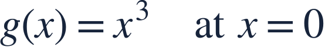

The first derivative test
첫 도함수 판정

A zero derivative becomes a local extremum only when the behavior supports it.
도함수가 0이어도 주변 변화 양상을 확인해야 국소극값인지 알 수 있습니다.
A zero derivative becomes a local extremum only when the behavior supports it.
도함수가 0이어도 주변 변화 양상을 확인해야 국소극값인지 알 수 있습니다.
Recall the sign pattern +, −, + from the preceding lesson.
이전 강의의 부호 배열 +, −, +를 복습하세요.
Increasing then decreasing makes a local maximum; decreasing then increasing makes a local minimum.
증가 후 감소하면 국소최대, 감소 후 증가하면 국소최소입니다.
The function turns from rising to falling.
함수가 증가에서 감소로 바뀝니다.
The function turns from falling to rising.
함수가 감소에서 증가로 바뀝니다.
State the sign change as the reason for each conclusion.
각 결론의 근거로 도함수의 부호 변화를 명시하세요.
A derivative equal to zero without a sign change need not give an extremum.
도함수가 0이어도 부호 변화가 없으면 극값이 아닐 수 있습니다.

Does g have a local extremum at 0?
g는 0에서 국소극값을 갖나요?